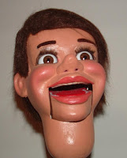

Who dunnit?
2/15/2010
{kind=link}

Question: If the string(s) should ever break, Can I go in through the mouth somehow (does the jaw fit over a small bar), or must I somehow undo the wig and go through the top of the head? This has never happened to me, and I hope it doesn't, but I also know that there is always a possibility and nothing (i.e. string) lasts forever. I am guessing that it quite an involved process (beyond me) to repair a broken string. Were many of this character built? Thanks! Jim
* * * * *
Answer: You have one of the Maher Studios "Hal's" (Jerry Mahoney conversions). There's no way for me to give you a number built because their production began with Madeleine Maher and then overlapped into my time of producing figures for maybe two years. I know I probably built a dozen or more. Madeleine (with George Eazer as mechanic) producd many more than me. So 50-100 total? Strictly a guess.
The mouth on this figure can be pulled out from the front for string replacement. Don't remove it any further than absolutely necessary to avoid overstretching the spring which could result in an even bigger problem. There is a "door" under the wig. When necessary to open the head, I remove the wig (using a Xacto knife with convex blade) beginning at the base of the neck and working upward just enough to expose the door. Usually I do not have to disturb the wig's hairline from the front. I'm going to guess that this head already has had some wok done, as the eyes are more modern than those wooden balls with sunken marbles for pupils that would have been installed originally. And the wig has been changed. He's been repainted, too. I'll even go so far as to guess that I probably did the work! Mr. D
The mouth on this figure can be pulled out from the front for string replacement. Don't remove it any further than absolutely necessary to avoid overstretching the spring which could result in an even bigger problem. There is a "door" under the wig. When necessary to open the head, I remove the wig (using a Xacto knife with convex blade) beginning at the base of the neck and working upward just enough to expose the door. Usually I do not have to disturb the wig's hairline from the front. I'm going to guess that this head already has had some wok done, as the eyes are more modern than those wooden balls with sunken marbles for pupils that would have been installed originally. And the wig has been changed. He's been repainted, too. I'll even go so far as to guess that I probably did the work! Mr. D